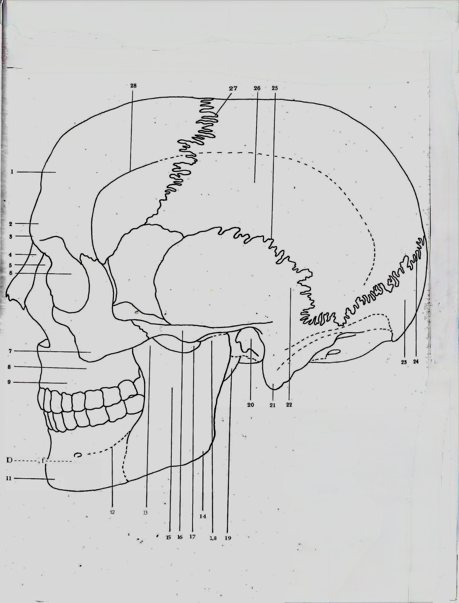
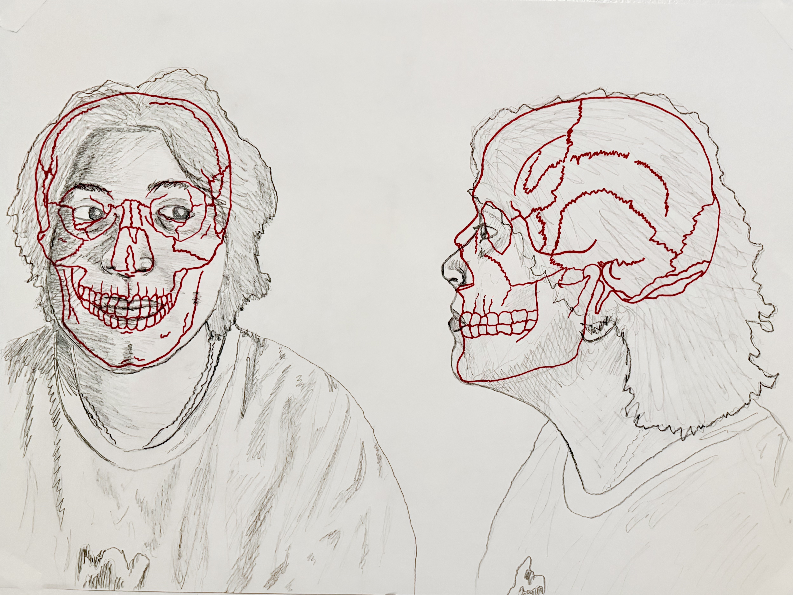
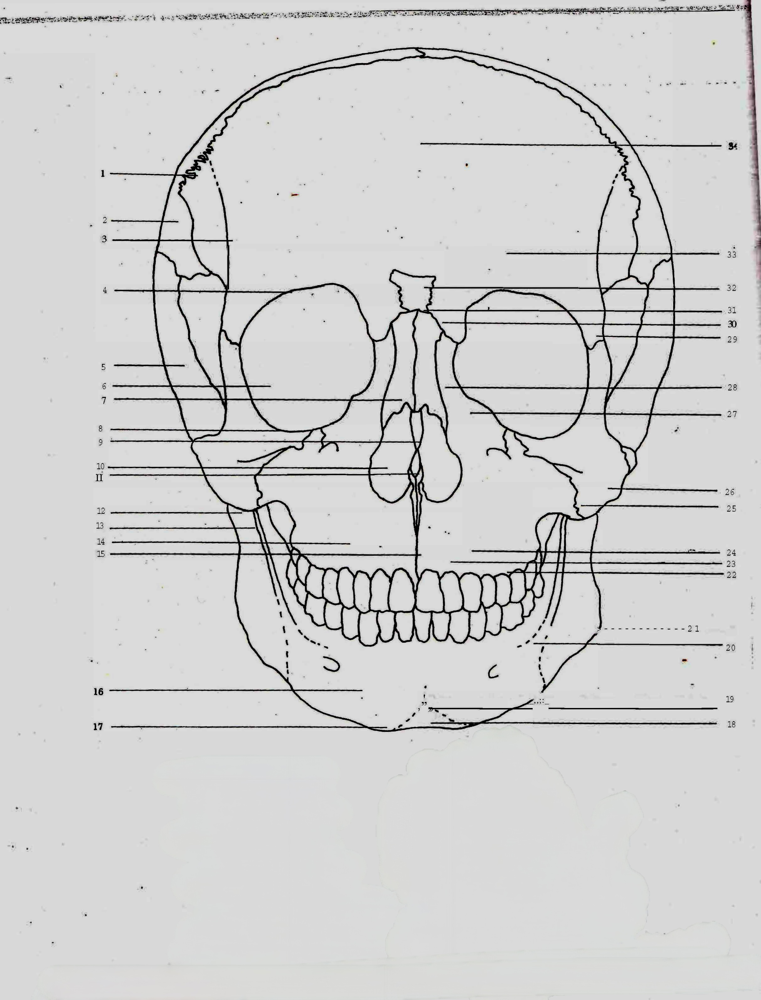
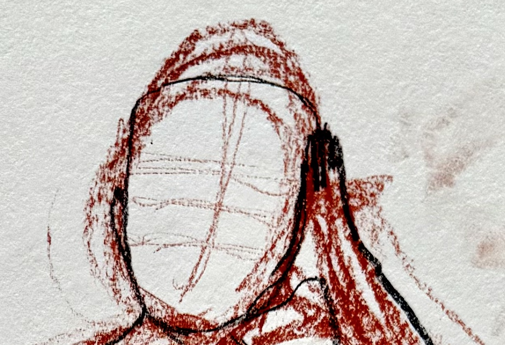
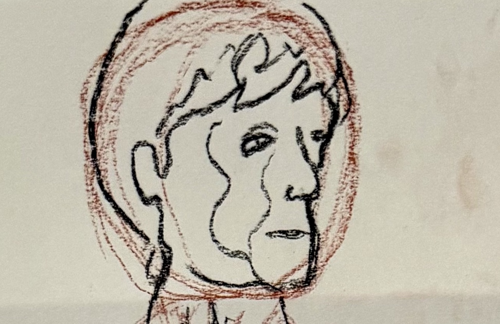
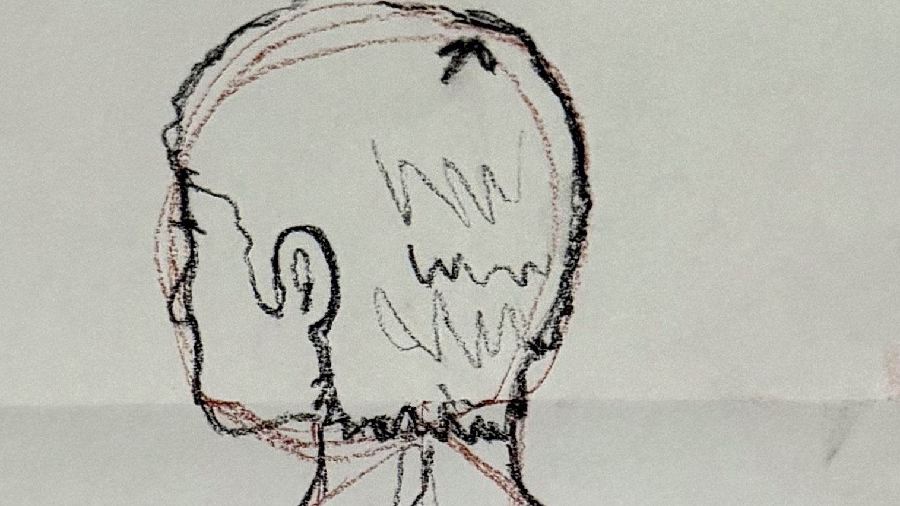
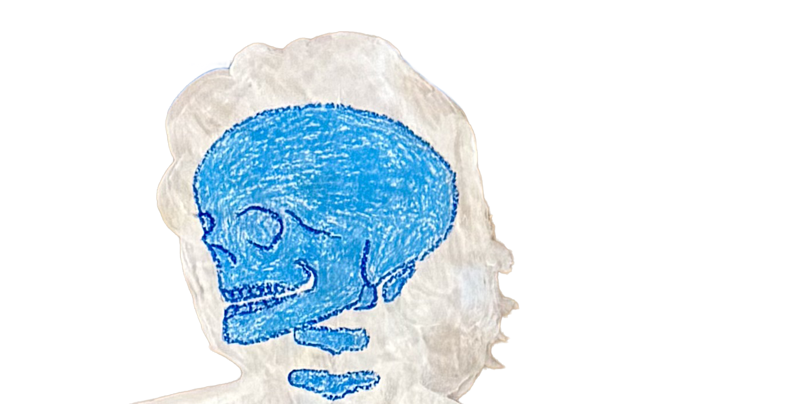
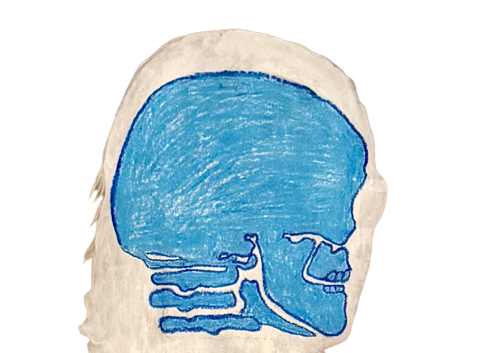

Skull
Cranial structure studies
Explore skull studies documenting the progression from gesture observation through skeletal mapping to understanding cranial landmarks.
Featured Study: Skull Anatomical Mapping



Click the buttons above to explore different views
Study Collection

Skull Study 01: Mass Gestural Drawing

Skull Study 02: Gestural Continuation

Skull Study 03: Back View Gesture

Skull Study 04: Front Overlay

Skull Study 05: Back Overlay